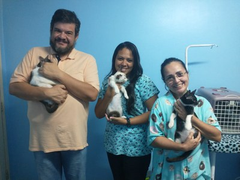
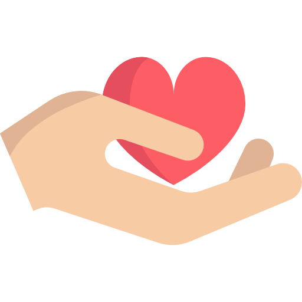
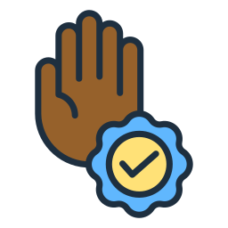

Conheça o IFAnimal: Nossa missão e amor pelos gatos.
O grupo que coordena o If Animal é composto pelas professoras do campus Maceió Eronilma Barbosa da Silva, Karina Dias Alves, Maria Izabel Correia Silva e Adelayde Rodrigues Alcântara, que contam com o apoio de bolsistas, padrinhos e madrinhas que apoiam voluntariamente o Projeto Extensionista, por meio da doação de ração aos animais, além da parceria com o Grupo de Pesquisa e Extensão em Equídeos (Grupequi), da Universidade Federal de Alagoas (Ufal). Sob a coordenação do professor da Ufal Pierre Escodro, parceiro do IfAnimal, veterinários, estudantes e professores do Grupequi participam das ações de vacinação, vermifugação e castração dos animais.
Nossos impactos em números
+80
ADOTADOS
+100KG
RAÇÃO DISTRIBUÍDA/MÊS
+10
CASTRAÇÃO/MÊS
+100
RESGATADOS
Nossos valores

Cuidado
Compromisso

Ética